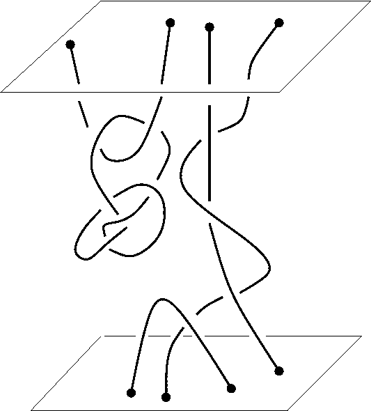
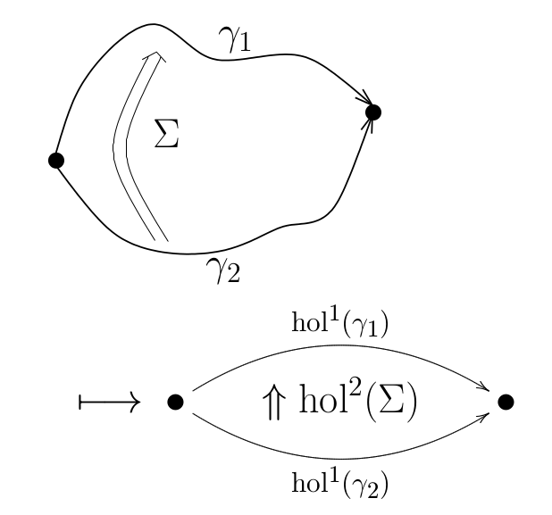

|

|

|

|
Preprints (comments are very welcome)
- Faria Martins J, Meusburger C : A geometrical description of untwisted Dijkgraaf-Witten TQFT with defects. arXiv:2410.18049 [math.QA].
- Faria Martins J, Porter T : A categorification of Quinn's finite total homotopy TQFT with application to TQFTs and once-extended TQFTs derived from strict omega-groupoids. arXiv:2301.02491 [math.CT]. (235 pages, preliminary version.)
Publications (comments are very welcome as well):
- Koppen V, Faria Martins J, Martin P: Exactly solvable models for 2+1D topological phases derived from crossed modules of semisimple Hopf algebras. To appear in Advances in Theoretical and Mathematical Physics
- Faria Martins J, Frank W Nijhoff, Daniel Riccombeni Darboux-Kadomtsev-Petviashvili system as an integrable Chern-Simons multiform theory in infinite dimensional space . Physical Review D 109, L021701. Preliminary version.
- Torzewska F, Faria Martins J, Martin P: Motion groupoids and mapping class groupoids. . Communications in Mathematical Physics 402, 1621–1705 (2023). Preliminary version.
-
- Damiani C, Martin P, and Faria Martins J: On a canonical lift of Artin's representation to loop braid groups, Journal of Pure and Applied Algebra Volume 225, Issue 12, December 2021, 106760. Postprint version.
- Bullivant A, Martin P, and Faria Martins J: Representations of the Loop Braid Group and Aharonov-Bohm like effects in discrete (3+1)-dimensional higher gauge theory. Advances in Theoretical and Mathematical Physics, Volume 23 (2019) Number 7, Pages: 1685--1769. Postprint version. Arxiv version arXiv:1807.09551 [math-ph].
- Bullivant A, Calçada M, Kádár Z, Martin P, and Faria Martins J: Higher lattices, discrete two-dimensional holonomy and topological phases in (3+1) D with higher gauge symmetry. Reviews in Mathematical Physics, Vol. 32, No. 04, 2050011 (2020) | Research Paper. Postprint version. Earlier version (arXiv:1702.00868 [math-ph]).
- Akça İ, Emir K, Faria Martins J: Two-Fold Homotopy of 2-Crossed Module Maps of Commutative Algebras. Communications in Algebra 47 (2019), no. 1, 289–311. Preliminary version.
- Bullivant A, Calçada M, Kádár Z and Martin P, Faria Martins J: Topological phases from higher gauge symmetry in 3+1 dimensions. PHYSICAL REVIEW B 95, 155118 (2017). Preliminary version.
- Cirio L.S., Faria Martins J. Categorifying the $sl(2,C)$ Knizhnik-Zamolodchikov Connection via an Infinitesimal 2-Yang-Baxter Operator in the String Lie-2-Algebra. Advances in Theoretical and Mathematical Physics. Volume 21 (2017) Number 1, Pages: 147 - 229 Preliminary version.
- Faria Martins J.: Crossed modules of Hopf algebras and of associative algebras and two-dimensional holonomy. Journal of Geometry and Physics Volume 99, January 2016, Pages 68-110. Preliminary version.
- Akça İ, Emir K, Faria Martins J: Pointed Homotopy of Maps Between 2-Crossed Modules of Commutative Algebras, with İ.İlker Akça and Kadir Emir. Homology, Homotopy and Applications18 (2016), no. 1, 99–128. Preliminary version.
- Faria Martins J, Picken R. , Link invariants from finite categorical groups, Homology, Homotopy & Applications. 2015, Vol. 17 Issue 2, p205-233. 29p. Preliminary version. This is a very reduced version of: Link invariants from finite categorical groups and braided crossed modules arXiv:1301.3803 [math.GT]
- Cirio L.S, Faria Martins J.: Infinitesimal 2-braidings and differential crossed modules, Advances in Mathematics, Volume 277, 4 June 2015, Pages 426-491. Preliminary version.
- Cirio L.S, Faria Martins J.: Categorifying the Knizhnik–Zamolodchikov connection: Lucio Simone Cirio, Differential Geometry and its Applications, Volume 30, Issue 3, June 2012, Pages 238–261. Preliminary version.
- Gohla B.; Faria Martins J.: Pointed homotopy and pointed lax homotopy of 2-crossed module maps, Advances in Mathematics Volume 248, 25 November 2013, Pages 986-1049. Preliminary version. Very preliminary version (results proved in a different way).
- Faria Martins J, Mikovic A. :Lie crossed modules and gauge-invariant actions for 2-BF theories, Advances in Theoretical and Mathematical Physics, Volume 15, Number 4 (August 2011) p.1059-1084. Preliminary version
- Faria Martins J, Picken R..: Surface Holonomy for Non-Abelian 2-Bundles via Double Groupoids, Advances in Mathematics Volume 226, Issue 4, 1 March 2011, Pages 3309-3366. Very preliminary version (the title is different from the published version).
- Faria Martins J, Picken R..: The fundamental Gray 3-groupoid of a smooth manifold and local 3-dimensional holonomy based on a 2-crossed module, Differential Geometry and its Applications Volume 29, Issue 2, March 2011, Pages 179-206. Very preliminary version (it contains more materials than the published version).
- Faria Martins J, Mikovic A.: Spin Foam State Sums and Chern-Simons Theory, . Chern-Simons gauge theory: 20 years after, 277–284, AMS/IP Stud. Adv. Math., 50, Amer. Math. Soc., Providence, RI, 2011. Preliminary version.
- Faria Martins J, Mikovic A.: Four-Dimensional Spin Foam Perturbation Theory, Symmetry, Integrability and Geometry: Methods and Applications (SIGMA). 7 (2011), 094, 22 pages.
- Faria Martins J: -The fundamental 2-crossed complex of a reduced CW-complex. Homology, Homotopy and Applications, Vol. 13 (2011), No. 2, pp.129-157.
- Faria Martins J, : -Spin Foam Perturbation Theory for Three-Dimensional Quantum Gravity, Communications in Mathematical Physics. Volume 288, Number 2 / June, 2009.
- Faria Martins J., Picken R..On Two-Dimensional Holonomy, Transactions of the American Mathematical Society, 362 (2010), 5657-5695.
- Faria Martins J.: The Fundamental Crossed Module of the Complement of a Knotted Surface. Transactions of the American Mathematical Society. 361 (2009), 4593-4630.
- Faria Martins J., Kauffman L.H.: Invariants of Welded Virtual Knots Via Crossed Module Invariants of Knotted Surfaces, Compositio Mathematica. Volume 144, Issue 04, July 2008, pp 1046-1080.
- Faria Martins J, Mikovic A.: Invariants
of Spin Networks Embedded in Three-Manifolds, Communications
in Mathematical Physics, Volume 279, Number 2/ Abril
2008, pages 381-399.
- Barrett J.W, Garcia Islas J.M, Faria Martins J.: Observables in the Turaev-Viro and Crane-Yetter models, Journal of Mathematical Physics, 48, 093508 (2007).
- Faria Martins J, Porter T : On Yetter's Invariant and an Extension of the Dijkgraaf-Witten Invariant to Categorical Groups, Theory and Application of Categories, Vol. 18, 2007, No. 4, pp 118-150.
- Faria Martins J: On the Homotopy Type and the Fundamental Crossed Complex of the Skeletal Filtration of a CW-Complex. Homology Homotopy and Applications, Vol. 9 (2007), No. 1, pp.295-329.
- Faria Martins J: Categorical Groups, Knots and Knotted Surfaces, J. Knot Theory Ramifications 16 (2007). no 9, 1181-1217. Preliminary version.
Other work:
- Faria Martins J: On 2-Dimensional Homotopy Invariants of Complements of Knotted Surfaces.
Note: This is an archaic version of "The Fundamental Crossed Module of the Complement of a Knotted Surface, Trans AMS. 361 (2009), 4593-4630", using movies of knotted surfaces with bands and spanners rather than hyperbolic splittings of knotted surfaces for constructing a representation of the algebraic homotopy 2-type of the complement of a knotted surface. May still be of interest. - Faria Martins J, Picken R. , Link invariants from finite categorical groups and braided crossed modules arXiv:1301.3803 [math.GT] This is the original arxiv version of:
- Faria Martins J, Picken R. , Link invariants from finite categorical groups, Homology, Homotopy & Applications. 2015, Vol. 17 Issue 2, p205-233. 29p. This version is considerably larger in comparison to the published version, and in particular the paper also develops on invariants of links derived from 2-crossed modules / braided regular crossed modules. These invariants may be of independent interest.
PhD Thesis:
Quantum Topology and the Lorentz Group.Thesis related publications
- Faria Martins J: Knot Theory with the Lorentz Group, FUNDAMENTA MATHEMATICAE 188 (2005), 59-93. (Special volume based on papers submitted by the participants of the Second International Conference `Knots in Poland 2003').
- Faria Martins J:On the Analytic Properties of the $z$-coloured Jones Polynomial, J. Knot Theory Ramifications 14 (2005), no. 4, 435--466. Preliminary version.